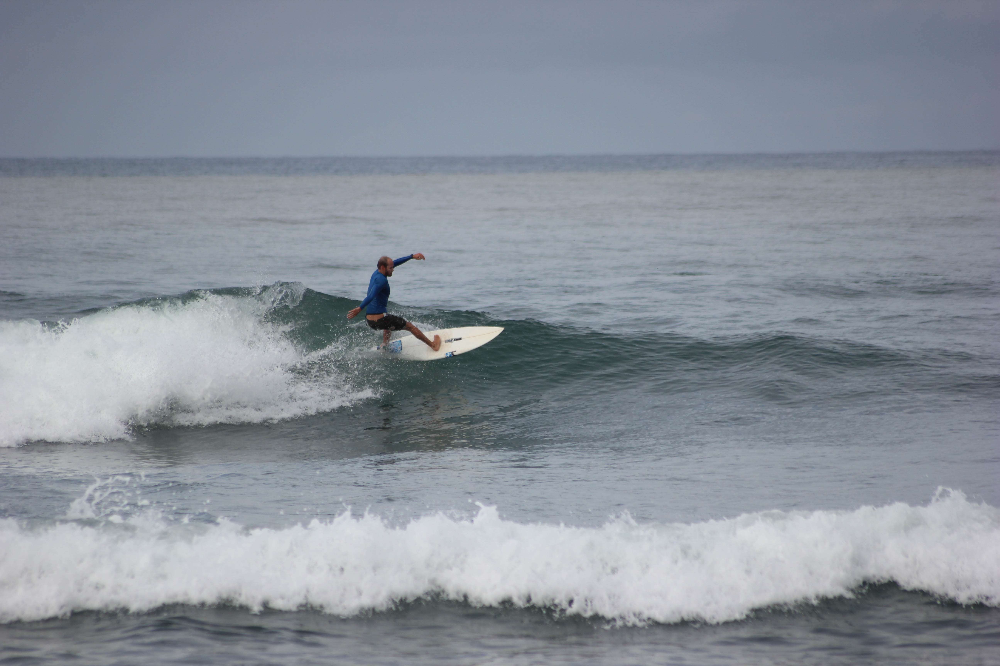

Hello, my name is Constant

Bienvenu.e !
Tu es ici sur mon site, je suis actuellement en formation Webdev. Ceci est ma toute première page créée !
I'm learning how to build a website. This will help me to create all the projects and concepts I want.
I am 28, living in Bordeaux. I love travelling adventures, surfing and taking photos/videos to edit them later. I support ethical projects and I fight for equality in our society.
Skills
I am able to create a website due to Le Wagon Dev school, based in Bordeaux. When I will be autonomous on HTML and CSS writing, I would love to help independants entrepreneurs to create their websites.
Creativity, needs understanding and communication are the key for a good website made for different clients.
Découvrir le wagonHobbies
🛹 🏍 🏕 🌊 🧘♂️
I love all kinf of outdoor sports, which are close from nature. I practice surfing since my childhood, it helps me to breathe, and to stay positive in all kind of situations.
Also, I bought a nice bicycle 3 months ago. The project is to go around Europe for trekking and meet new people. I will film them in their local and simple lives and create documentary about "simple life". I mean "How to be happy with simple things ?"